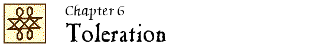

John Locke Chronology |
John Locke Manuscripts |
John Locke Resources |
John Locke Bibliography | ||

|
1659-1720 1721-1800 1801-1900 1901-1950 |
1951-1960 1961-1970 1971-1980 1981-1990 |
1991-2000 2001-2005 2006-2010 2011-2015 |
2016 2017 2018 |
 1951
1951
The travail of religious liberty : nine biographical studies / by Roland H. Bainton. – Philadelphia : Westminster Press, ©1951.
See Ch. 9, “Apologist for the Act of Toleration : John Locke” (p. 229-252)
Y&Y 1951.1
1953
“Le origini dell’idea della tolleranza religiosa nel Locke e gli scritti inediti della Lovelace Collection” / Ernesto De Marchi. // IN: Occidente. – 9 (1953):460-492.
LNL 4:13; M 165; Y&Y 1953.3
1954
“Rokku ni okeru jinken shisō no tokushitsu to genkai-sono shākai tetsugaku ni okeru kokka to kyōkai tono mondai ni kanren shite” = [Peculiarities and limits of Locke’s thought on human rights : with particular attention to the problem of church and state in his social philosophy] / K. Sakai. // IN: Hōkei ronshu = Journal of the Association of Legal, Political and Economic Sciences, Aichi University. – 9 (1954):55-126.
Unverified.
LNL 4:15
1956
“Ohseifukko to Jon Rokku no shūkyojiyūron” = [The Restoration and Locke’s view on toleration] / Hideo Suzuki. // IN: Rekishi kyōiku. – 4 (1956).
Unverified.
H&W 1983
1957
Religious toleration : its background in the philosophy of John Locke / by James W. Byrne. – Thesis (Ph.D.)–Fordham University, 1957. – iii, 185 leaves.
LNL 6:19; Y&Y 1957.2
“Einleitung” / [von Julius Ebbinghaus]. // IN: Ein Brief über Toleranz … (1957)
H&W 1983
A consideration of Locke’s letters on toleration … / by W.E. Molyneux. – Thesis (B.Litt.)–Oxford University, 1957.
Unverified; source: Aslib 7:623.
Y&Y 1957.12
1959
“John Locke, la tolerancia y los proprietarios ingleses” / R. Calderón Bouchet. // IN: Boletín de estudios políticos (Mendoza, Argentina). – no. 10 (1959):113-130.
Y&Y 1959.6
1960
“Locke’s earlier theory of toleration” / Kimimasa Inoue. // IN: Annual report of studies in humanities and social sciences (Nara Women’s University). – 4 (1960):1-21.
“Lockean ideas in Thomas Jefferson’s Bill for establishing religious freedom” / by S. Gerald Sandler. // IN: Journal of the history of ideas. – 21 (1960):110-116.
Abstracts: HistAbst 6:1311; BullSig 15:884.
H&W 263; Y&Y 1960.21
1961
“Introduzione.” // IN: Lettera sulla tolleranza … (1961).
A Polish translation is included in Locke #49 (p. xix-xliii)
The origins of John Locke’s theory of toleration / by E.I.R. De Marchi. – Thesis (B.Litt.)–Oxford University (St. Antony’s College), 1961. – 11, iii, 481 leaves.
Y&Y 1962.2
“John Locke e la politica della tolleranza” / Lia Formigari. // IN: Il sedicesimo. – 4:no. 3/4 (dicembre 1961):7-8.
M 326
Religious toleration in England, 1787-1833 / by Ursula Henriques. – London : Routledge & Kegan Paul, 1961.
Also published: Toronto : University of Toronto Press, 1961.
See p.25-30.
“Rokku no shoki no kanyōron” = [Locke’s theory of toleration at the intermediate period] / Kimimasa Inoue. // IN: Annual report of studies in humanities and social sciences (Nara Women’s University). – 5 (1961):43-63.
Unverified
H&W 1983
“Premessa.” // IN: Lettera sulla tolleranza … (1961). – See entry under 1968.
“L’abbozzo originario e gli stadi de composizione di ‘An essay concerning toleration’ e la nascita delle teorie politico-religiose di John Locke” / Carlo Augusto Viano. // IN: Rivista di filosofia. – 52 (1961):285-311.
Abstract: BullSig 16:13978.
H&W 264; M 200; Y&Y 1961.27
Reprinted in: Locke / edited by John Dunn and Ian Harris (1997). – vol. 1:181-207.
“Introduzione.” // IN: Scritti editi e inediti sulla tolleranza … (1961). – p. 5-13.
1962
Citizenship and conscience : a study in the theory and practice of religious toleration in England during the eighteenth century / by Richard Burgess Barlow. – Philadelphia : University of Pennsylvania Press, ©1962.
See Ch. 1, “Toleration and the rights of conscience” (p. 15-56)
[On A letter concerning toleration by John Locke] / Kimimasu Inoue. // IN: Annual report of studies in humanities and social sciences (Nara Women’s University). – 6 (1962):1-10.
Title and article in Japanese.
“Prólogo” / Raymond Klibansky. // IN: Carta sobre la tolerancia … (1962). – See entry under 1968.
“Introducción” / Abrahan Waismann. // IN: Carta sobre la tolerancia … (1962).
1963
“Wstęp” / Ernesto de Marchi ; tłum. z języka słoskiego Hanna Cierniak.// IN: List o tolerancji … (1963). – p. xix-xliii. – See entry under 1961.
“Nota lockiana sulla tolleranza” / E. Fossati. // IN: Rivista di filosofia politica e sociale. – 1963:312-315.
Unverified.
M 339
“Rokku no Kanyō ni kansuru shokan ni taisuru aru hihan ni tsuite” = [On a criticism of Locke’s Epistola de tolerantia] / Kimimasu Inoue. // IN: Annual report of studies in the humanities and social sciences (Nara Women’s University). – 7 (1963):1-18.
On Proast, An argument … (1690)
“Przedmowa” / Raymond Klibansky. // IN: List o tolerancji … (1963). – See entry under 1968.
“Introduction.” // IN: A letter concerning toleration … (1963). – p.xv-l.
“Introduzione” / Alfredo Sabetti. // IN: Lettura sulla toleranza … (1963). – p.xi-lxx.
1964
“John Locke, preparing the way for the Revolution.” – See entry in Chapter 7.
“Rokku no Kanyō ni kansuru daini shokan ni tsuite” = [On Locke’s Epistola de tolerantia] / Inoue Kimimasu. // IN: Annual report of studies in the humanities and social sciences (Nara Women’s University). – 8 (1964):1-16; 9 (1965):22-43.
“Préface.”. // IN: Lettre sur la tolérance … (1964). – See entry under 1968.
“Introduction.”. // IN: Lettre sur la tolérance … (1964).
1965
“John Locke’s philosophy of religious toleration” / by James W. Byrne. // IN: Personalist. – 46 (1965):245-252.
Abstract: BullSig 20:2056.
H&W 265; Y&Y 1965.13
“John Locke, heir of Puritan political theorists.” – See entry in Chapter 7.
John Locke and the Supreme Court doctrine of freedom of religion / by Alfred G. Killilea. – Thesis (Ph.D.)–University of Chicago, 1965. – 122 leaves.
“La critica illuministica.” // IN: Religione / a cura di Mario Miegge. – Firence : G.C. Sansoni, 1965. – (Storia antologica dei problemi filosofici). – p.669-754.
See “Introduzione” (p. 671-699) and “John Locke” [selections from Epistola de tolerantia] (p. 704-706)
A 81
“Rokku ni okeru kanyorōn no hatten” = “The development of Locke’s theory of toleration” / Kōki Nakamura. // IN: Hitotsubashi ronsō = Hitotsubashi review. – 54:no. 1 (July 1965):80-97.
H&W 1983
1967
“Introduction.” // IN: Two tracts on government. – See entry in Chapter 7.
“John Locke and religious toleration” / Frederick C. Giffin. // IN: Journal of church and state. – 9 (1967):378-390.
Y&Y 1967.17
“Il socinianesimo di Locke e l’edizione inglese dell’Epistola sulla tolleranza” / Mario Montuori. // IN: Atti della Accademia di scienze morali e politiche. – 78 (1967):535-562.
An English translation, “The Socinianism of Locke and the English edition of the Letter concerning toleration” is included in Montuori, John Locke on toleration and the unity of God (1983). – p. 119-146.
LNL 3:6; M 229; Y&Y 1967.33
“Absolute liberty : the life and thought of William Popple, 1638-1708.” – See entry in Chapter 12.
1968
Political dialogues / Maurice Cranston. – London : British Broadcasting Corporation, 1968.
See “John Locke and Lord Shaftesbury : a dialogue on toleration” (p. 22-42)
LNL 1:10; Y&Y 1968.8
“Introduction : Locke’s theory of toleration.” // IN: Epistola de tolerantia … (1968). – p. 1-42.
“Preface.” // IN: Epistola de tolerantia … (1968). – p. vii-xliv.
Versions of Klibansky’s preface also appeared in Italian, Spanish, Polish, French, Japanese and Magyar editions of the Epistola.
1969
“Rokku no Kanyō ni kansuru daini shokan ni taisuru aru hihan ni tsuite” = “On Proast’s Third letter concerning toleration” / Kimimasa Inoue. // IN: Annual report of studies in the humanities and social sciences (Nara Women’s University). – 13 (1969):1-24; 14 (1970).
1970 portion not verified.
“L’epistola lockiana sulla tolleranza dalla traduzione di Popple alla traduzione di Gough” / Mario Montuori. // IN: Giornale critico della filosofia italiana. – 3. serie:23 (1969):206-221.
An English translation, “Locke’s Epistola on toleration from the translation of Popple to that of Gough,” is included in Montuori, John Locke on toleration and the unity of God (1983). – p. 147-170.
Abstract: BullSig 24:1319.
H&W 396; M 242; Y&Y 1969.21
1970
[Commentary / by A. Hirano]. // IN: Epistola de tolerantia [Japanese translation] (1970).
“Préface.”. // IN: Epistola de tolerantia [Japanese translation] (1964). – See entry under 1968.
“Problem tolerancji w Europie w drugiej połowie XVII wieku : arianie polscy, Bayle, Locke” / Zbigniew Ogonowski. // IN: Wiek XVII : kontrreformacja, barok : prace z historii kultury / pod redakcją, Janusza Pelca. – Wrocław : Zakład Narodowy Imienia Ossolińskich Wydawnictwo Polskiej Akademii Nauk, 1970. – (Studia staropolskie ; t. 29). – p. 255-274.
1971
“On Locke’s view of enthusiasts” / Kimimasa Inoue. // IN: Annual report of studies in humanities and social sciences (Nara Women’s University). – 15 (1971):91-114.
LNL 4:4
“Spinozisme et tolérance chez le jeune Papin” / Roger Zuber. // IN: Dix-huitième siècle. – 4 (1971):217-227.
Abstract: BullSig 27:2645.
1972
“The civil theology of liberal democracy : Locke and his predecessors.” – See entry in Chapter 7.
1973
[Preface]. // IN: Levél a vallaśi türelemről (1973). – See entry under 1968.
“Bevezetés” / Mátrai László. // IN: Levél a vallaşi türelemről (1973). – p. 29-39.
“Shoki Rokku no tetsugakushisō to sezokuku” = [Philosophical thought and secularisation in early Locke] / T. Tomooka. // IN: Shinai kiyō. – 13 (1973)
Unverified.
H&W 1983
1974
“Filozoficzne aspekty walki ideologicznej o tolerancję w XVII wieku” / Zbigniew Ogonowski. // IN: Odrodzenie i reformacja w Polsce. – 19 (1974):103-116.
Includes a summary in German: “Die philosophischen Aspekte des ideologischen Kampfes um die Toleranz im XVII Jahrhundert” (p. 116)
Abstract: BullSig 29:6284.
1975
Locke and toleration / by John Gerald Anglim. – Thesis (Ph.D.)–Harvard University, 1975. – 353 leaves.
Y&Y 1975.3
Naturrecht und Toleranz bei John Locke / Wilhelm Baumgartner. – Inaug.-Diss.–Würzburg, 1975. – 268 p.
Abstract: DAI 5C:1546.
LNL 11:17; Y&Y 1975.5
[On John Locke’s ‘Ecclesia’ and ‘Sacerdos’] / Kimimasa Inoue. // IN: Annual report of studies in the humanities (Nara Women’s University). – 19 (1975):1-22.
LNL 8:6; H&W 1983
“Jon Rokku ni okeru kokka to shykyō” = [The state and religion in Locke] / Y. Mori. // IN: Seiji kenkyū. – 22 (1975).
Unverified.
H&W 1983
1976
John Locke e il principio di tolleranza religiosa / Corrado Avossa. – Napoli : A. Sparano, 1976. – 103 p.
Unverified.
H&W 1983
“The English Deists’ contribution to the theory of toleration” / by Günter Gawlick. // IN: Studies on Voltaire and the eighteenth century. – 152 (1976):823-835. – (Transactions of the Fourth International Congress on the Enlightenment ; vol. 2)
Y&Y 1976.15
“Veranderingen in de argumenten voor religieuze tolerantie en godsdienstvrijheid in de zestiende en zeventiende eeuw” / Hans R. Guggisberg. // IN: Bijdragen en mededelingen betreffende de geschiedenis der Nederlanden. – 91 (1976):177-195 [esp. 193-195]
“Toleranz oder Solidarität für die Bildungsarbeit in ethnologischen Museen von morgen?” / von Volker Harms. // IN: Zeitschrift für Ethnologie. – 101 (1976):265-277.
Tolerance : toward a new civility / Glenn Tinder. – Amherst : University of Massachusetts Press, 1976. – 187 p.
Abstract: BPh 26:566.
1977
[Anonymous].
“John Locke’s Letter on toleration.” – (Landmarks of religious liberty). // IN: Church and state. – 30:3 (March 1977):7-8.
“John Locke’s essay on infallibility : introduction, text, and translation” / John C. Biddle. // IN: Journal of church and state. – 19 (1977):301-327.
Includes text of Locke’s essay on infallibility [PRO 30/24/47/33] with an English translation.
LNL 9:3; A 952; Y&Y 1977.3
“Introduzione.” // IN: Scritti sulla tolleranza … (1977). – p. 7-75.
1978
Jon Rokku to sono senkushatachi : igirisu kanyōron kenkyū josetsu = [John Locke and his forerunners : an introduction to the study of theories of toleration in England] / Kimimasa Inoue. – Tokyo, 1978. – 347 p.
Unverified.
LNL 10:5; H&W 1983
Religion and politics : the intentions of the authors of the First Amendment / Michael J. Malbin. – Washington, D.C. : American Enterprise Institute for Public Policy Research, ©1978.
See p. 29-36.
“Di Klibansky e la Epistola de tolerantia di Locke” / Mario Montuori. // IN: Cannocchiale. – Nuova serie:v. 1:no. 1/2 (1978):155-156.
On Klibansky’s introductions to his editions of Locke’s Epistola; an English translation, “On Klibansky and Locke’s Epistola de tolerantia,” is included in Montuori, John Locke on toleration and the unity of God (1983). – p. 171-173.
“Locke on assent and toleration” / J.T. Moore. // IN: Journal of religion. – 58 (1978):30-36.
Abstract: BullSig 32:4486.
Y&Y 1978.28
Reprinted in: Locke / edited by John Dunn and Ian Harris (1997). – vol. 1:361-367.
“Rileggendo John Locke” / Mario Sina. // IN: L’Osservatore romano. – 26 gennaio 1978:page 3; 28 gennaio 1978:page 3.
Contents: “La tolleranza, problema teologico” – “La tolleranza, frutto di scetticismo?”
Unverified.
Reprinted in: Studi su John Locke (2015), pages 59-67.
Politic Christianity : Locke’s theology of liberalism. – See entry in Chapter 7.
1979
Naturrecht und Toleranz : Untersuchung zur Erkenntnistheorie und politische Philosophie bei John Locke / Wilhelm Baumgartner. – [Würzburg] : Königshausen und Neumann, 1979. – 226 p. – (Epistemata. Reihe Philosophie ; Band 2)
Based on the author’s dissertation (1974)
Y&Y 1979.3
Kindai seiji tetsugaku to shūkyō : jyushichiseiki shakai keizakusetsu ni okeru Shūkyō hihan no tenkai / Katō Takashi. – Tokyo : Tokyo Daigaku shuppankai, 1979.
See 3, “Locke ni okeru kanyō no shuchō” = [Tolerantia in Locke’s political philosophy] (p. 259-392)
John Locke and the founding of American civil religion / Sanford Kessler. – Thesis (Ph.D.)–Boston College, 1979. – iii, 278 leaves.
Abstract: DAI 40A:1666.
Y&Y 1979.17
“Locke’s moral development from conservative to liberal on toleration” / J.T. Moore. // IN: International studies in philosophy. – 11 (1979):59-75.
Abstract: BullSig 35:3235.
1980
Haberman, L. & Schochet, G. J.
“John Locke, toleration, revolution and private judgment.” – See entry in Chapter 7.
“John Locke, from absolutism to toleration” / Robert P. Kraynak. // IN: American political science review. – 74 (1980):53-69.
Abstracts: IPSA 30:2539; BullSig 35:3234.
Y&Y 1980.24
“L’idée de tolérance de Locke à Voltaire” / par R. Mauzi. // IN: Voltaire, Rousseau et la tolérance : actes du Colloque Franco-Néerlandais des 16 et 17 novembre 1978 à la Maison Descartes d’Amsterdam. – Lille : Presses universitaires de Lille, ©1980. – (Travaux et mémoires de la Maison Descartes, Amsterdam ; no. 2). – p. 31-37.
Notes on a speech, and the following discussion, by R. Desné and P. Peyronnet.
|
1659-1720 1721-1800 1801-1900 1901-1950 |
1951-1960 1961-1970 1971-1980 1981-1990 |
1991-2000 2001-2005 2006-2010 2011-2015 |
2016 2017 2018 |